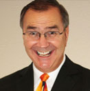
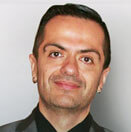
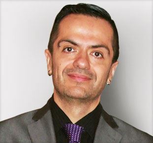

Realize Your Core Desires* Live an Incredible Life * Earn the Income You Want * Build Lasting Meaningful Relationships
About Beto Paredes
BETO PAREDES JOINED THE DNA MASTER COURSE TEAM
IN 2016 AS THE EXECUTIVE DIRECTOR.
 
Jack and Beto came together through the power of
revelation as they were both destined to work
together launching the DNAMasterCourse.com project.
Beto Paredes is a Joint Venture Partner and founder along with Jack on his new system DNAMasterCourse.com. He specializes in Jack’s
“Success Attitude Formula”, and how to use your biological control center (heart/brain) to keep moving strong. As a successful multiple business owner, software architect, sales management expert, performance trainer and energy medicine practitioner Beto intimately knows this formula for life success. His infusion of modern-day science behind the formulas used in the DNAMasterCourse.com is
nothing less than dynamic.
Body Work, Energy Medicine and High-Performance Training.
Beto Paredes dedicated thousands of hours to learning, practicing and developing programs in high performance while maintaining a strong and balanced bio-electromagnetic field (balance = health).
It was through his early academy level education in 1995 in energy medicine, Chi-Gong, Shiatsu and Acupressure, graduating
top of his class from UCMT, that his interest in the human energy field began. Since then he has incorporated
depth psychology, consciousness research, quantum biology, human energetics, and epigenetics into
the high-performance principles of personal development. Through several personal breakthroughs and helping
dozens of others, he’s created his own cross modality in energy health and performance
coined “The Photonic Method.” This he taught through various organizations and in his personal practice.
Now he is with Jack doing his absolute best work to bring his discoveries and scientific research to Jack’s
system. A system that fit his model so well that he had a eureka moment. “Jack’s system, especially
his “Success Attitude Formula” really DOES = the state you need to be in to succeed!”
Beto Paredes Joined the DNA of Success and DNA Master Course
team in 2016 as the Executive Director
Beto's impressive background is very diverse. Many of his projects have seen revenues in the millions. His experience includes international sales, award winning branding, sales organization management, business management, web development and core software engineering. He continues to launch successful companies and platforms to this day. He expects his partnership with Jack Zufelt to be one of the best he has ever done.

Beto’s accomplishments include:
Here are a few of his impressive clients:
For a full view into the Entrepreneurship and Business background of Beto Paredes please visit his website
www.BetoParedes.com .
UCMT University Training
Many of the techniques that Beto brings to the DNAMasterCourse.com Mastery programs have had their
foundation from before he became a successful internet engineer and entrepreneur. His earliest
experience with energy medicine he gained from UCMT. They were one of the top 5 schools in the
world at the time for Body Work.
Body Work Training
(Practiced 6 years after
school independent)
Energy Medicine Training
(still practice energy work and
Shiatsu in private practice)
Independent Study
Beto is a productive and very engaged father, husband, entrepreneur, trainer and of
course motivator but there is an interesting side to this character. Beto spends,
and has this scheduled, 13.5 hours a week dedicated to research and study. He has
held this discipline for years! The subjects he covers are vast but here are the ones
that have helped him shape his system the most.
Psychology study and research with emphasis on Jung and Assolsoli through their work in depth and transpersonal psychology (over 20 total fully published works researched).
Post-graduation he continued to go much deeper into energy medicine, field electromagnetics, quantum biology, and consciousness research for the last 15 years. (Over 20 fully published works; many textbook multiple contributors, and over 300 independent studies from various Journals researched)
Personal development, sales training and business management study and seminar attendance. Beto learned from well-known trainers starting of course with Jack Zufelt. Others such as Tony Robbins, Bryan Tracy, John Maxwell, Jim Collins, Zig Ziglar, Stephen Covey, Jason Jordan, and dozens of others. (Over 40 fully published works researched, and hundreds of seminar hours spent)
Deep study into performance physiology as seen in quantum biology. Especially, within the biology is consciousness systems developed by the stem cell biologists Bruce Lipton and Robert Lanza. (Over 10 fully published works researched and dozens of published studies)
Beto also has a passion for continual research into world history with emphasis on early civilizations, religions, ancient texts, Biblical antiquity, alchemy, Gnosticism, kabbalah, science, mysticism, western mystery schools and more. (Well over 200 fully published works researched, practiced, incorporated)
SPEAKING CAREER:
Beto has also appeared several times as a guest speaker at conferences in the Automotive,
MLM, Affiliate Marketing, Sales Management and Software Engineering space. These include IT Summit,
Affiliate Convention, several state IADA’s and the Ad-Tech OfferVault Leadership Conference.
For a full view into the Entrepreneurship and Business background of Beto Paredes please
visit his website www.BetoParedes.com .
FROM BETO PAREDES
"I come from a very hardworking entrepreneurial background. When my father was in his late
twenties he decided to move from his home of Chile to come to the United States. From that
point on, every day spent here was a learning experience and opportunity to progress and succeed.
Through dedication and hard work my father learned English and opened up an electronic technician
service. His business flourished, as did his career, and he was eventually able to open up
multiple locations as well as his own school for electronics. Very early on my brothers and
I incorporated the tech industry into our lives as well, which was really a natural evolution
from our father's technical line of work.
I am also a father and have two amazing sons
and three lovely daughters. Respectively they are Gabriel, Scarlet, Marisol, Amelia and Liam.
I am married to the woman of my dreams who is also my business partner. I love them all dearly
and they are a daily inspiration for everything I do.